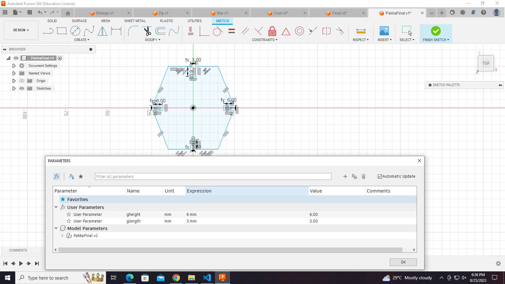
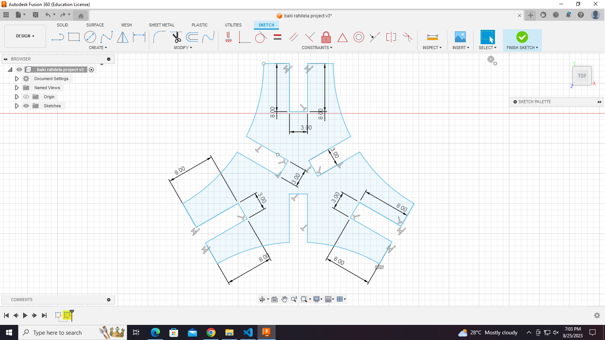
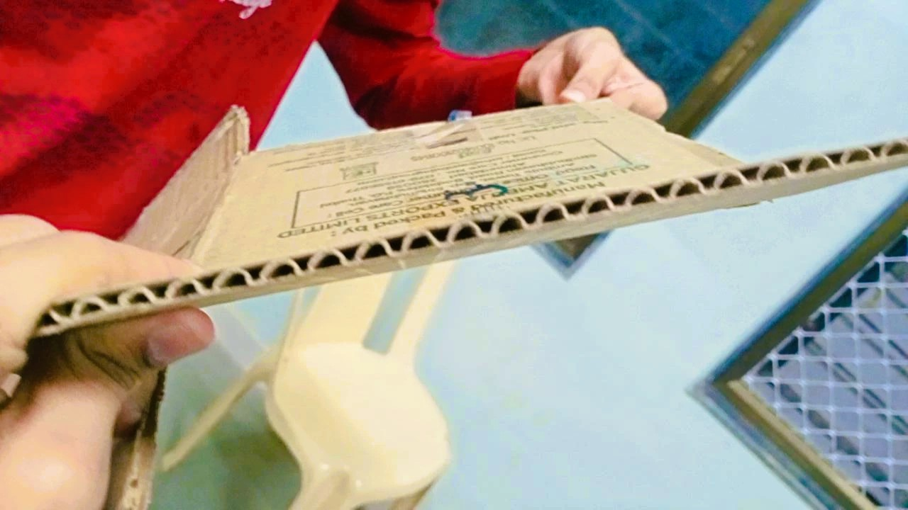
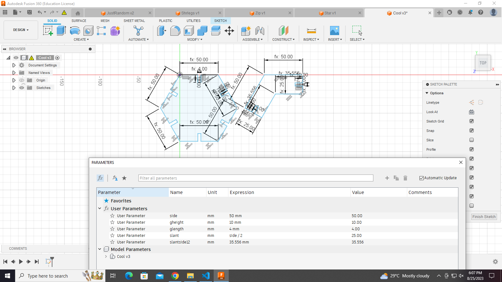
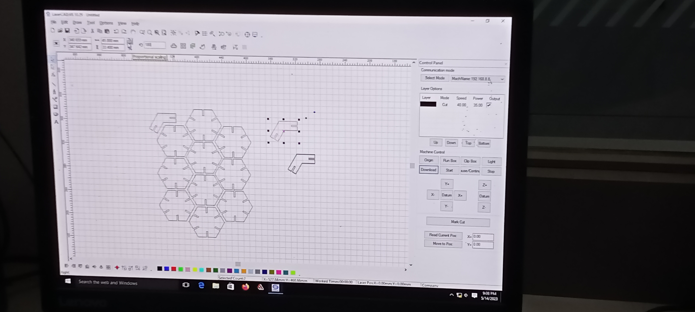
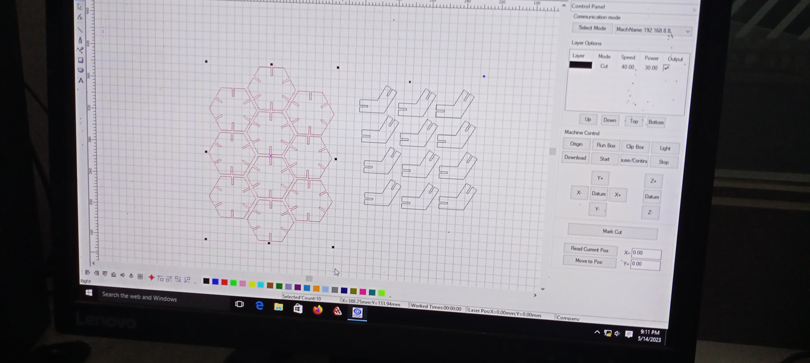
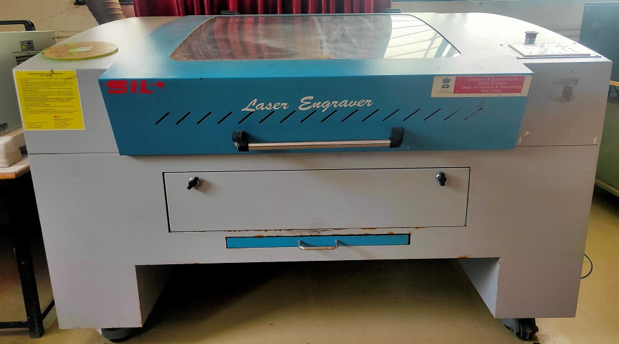
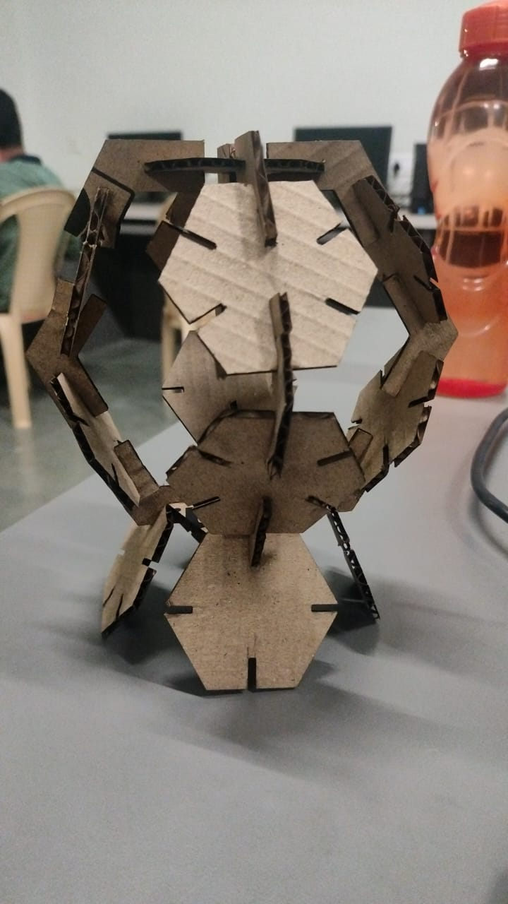

Welcome to the documentation of MODULE-3
Module Name : Computer Controlled Cutting
This is about the documentation of computer controlled cutting module
This included the deep understanding of FUSION360 and AUTOCAD and use of it through laser cutting.
Paramateric Designing
Parametric design is a technique in which engineers use algorithms to create complex, customized products or structures.
This process allows designers to input a set of parameters, or variables, that the algorithm then uses to generate a unique solution.
The parametric design process is flexible and can be applied to a wide range of problems, from engineering to architecture to product design.

Now lets talk something about our parametric design.
Here we have used 'glength' for width of grooves and 'gheight' for depth of grooves.
for this piece we have taken 'glength' equal to 3mm and 'gheight' equal to 6mm.
We can change the final product by simply changing this gheight and glength values.
Group Assignment :
- Aim : To perform 'kerf' calculation.
- Procedure :
- Make a parametric design and note down it dimensions.
- Export the design in .dxf format and upload it on laser-Cad software.
- Take proper precautions before starting the laser cutter.
- Give command to the laser cutter to cut the design.
- Engrave the design from the cardboard and measure its dimensions.
- Summarize the dimensions before cutting and after cutting.
- Outcome: After cutting, we came to know about the laser cutter's power, speed, accuracy and extend of thickness


Individual Assignment :-
I was given the task to make some parametric design and joint them in such a way that they should make an
assembly.
Assembly means joining the parts in such a way that it represent some kind of
ordered geometry.
Task: To make an assembly
- Make a parametric design.
- Note down it dimensions.
- export it in .dxf or .dwf format.
- upload it on the laser-Cad software.
- make the required changes on the laser-Cad workspace.
- copy the objects if want multiple copies to assemble.
- lastly, check that the USB port is properly connected with laser-Cutter otherwise it will provide communication error.
Click on download and file will be downloaded in machine.
- Operate the laser-Cutter properly by giving relevant instructions.
- collect the design and engrave it to make the required assembly.
Coming to the model, here is the sketch in FUSION360 software....

Now we have to shift this design in 'LASERCAD' software which is attached to the laser cutting machine
We have to adjust the size in this and send command to machine to start work . Now here is some images and video clips of model in lasedcad software .


This is the Laser cutting machine

After finalizing the design on lasercad we have to forward it to the laser cutting machine
here I have some images of laser cutted/engraved cardboard pieces of the model before the final assembly
Finally!!!
Model is here.

__________Thank you__________